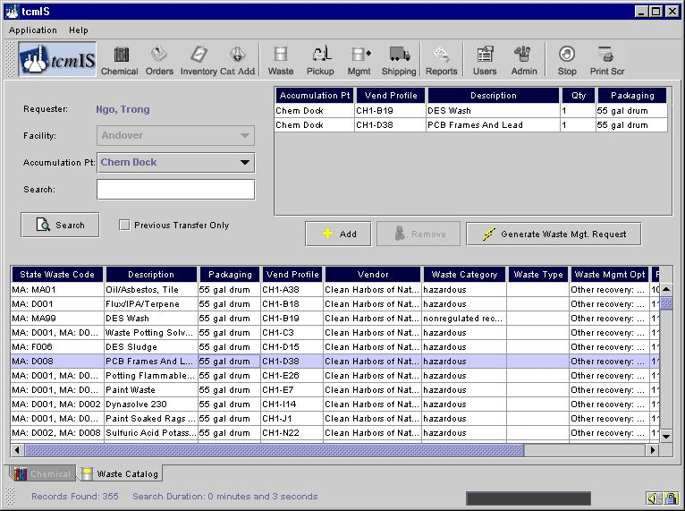
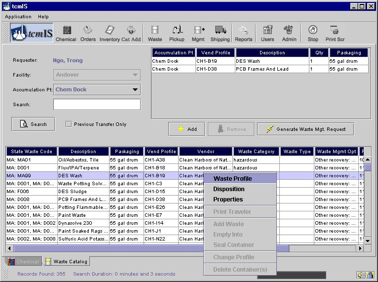

Waste Catalog
To reach this screen you can click on the button named Waste as shown below.

The first step in ordering a waste transfer is to search for the waste in the Catalog. You may enter virtually anything you know about the material in the Search field, such as profile number or waste name. The more specific the information you enter the more your search is narrowed.Once you’ve entered the information - click on the Search button as shown on the Waste Catalog screen.

The catalog contains information on the wastes generated in your facility and work area. Each column in the catalog presents data on the specific waste. If the information does not fit in the column you can expand the view by moving the line at the top of the column with your cursor.
More information can be obtained for a specific waste by left clicking anywhere on the line so that the line is highlighted, then right clicking to display a menu of additional selections.

Current choices are Profile (link to image), Properties (DOT classification, EPA codes, State codes, characterization parameters, and SARA 313 compositions), and Disposition (waste management option, vendor, transporters, and location of the waste disposition). Choices in bold mean they are active and can be choosen.
Clicking on View Profile, for example, will display the profile for that waste.